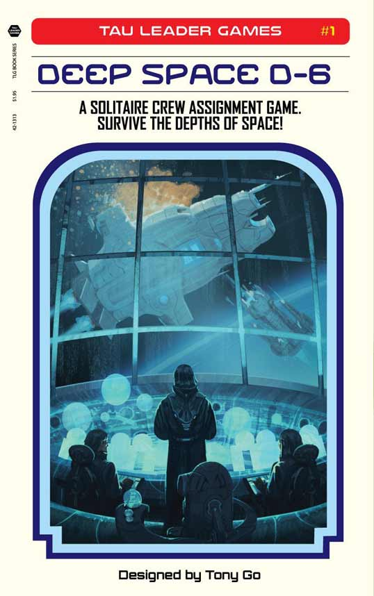
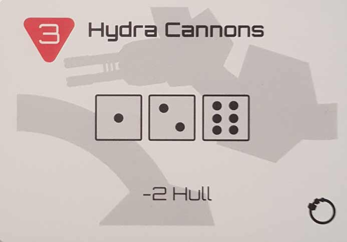
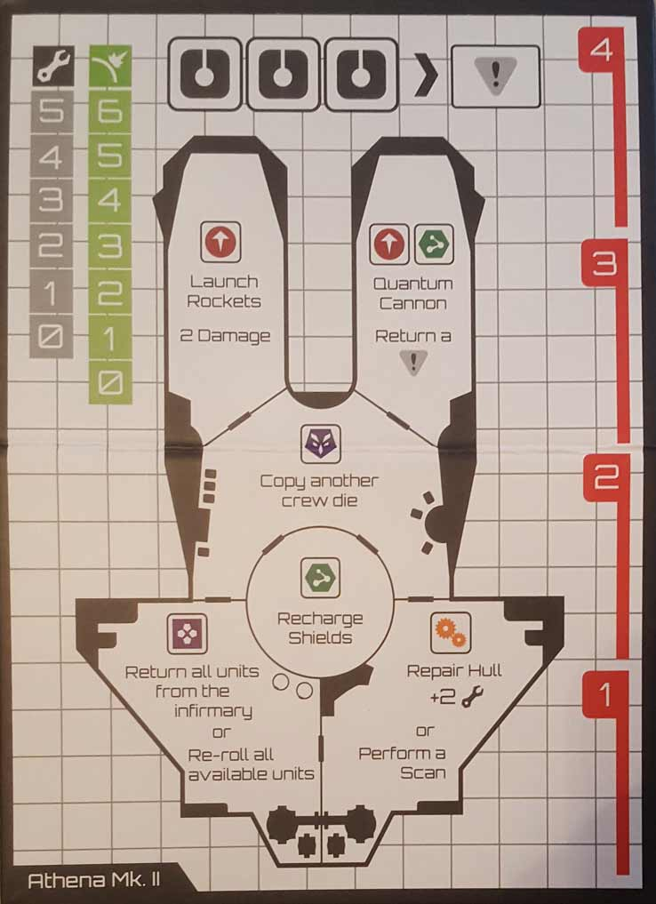
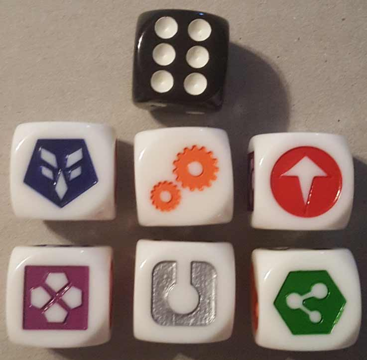

In this Deep Space D-6 review, D and Will take a look at the one-player, dice rolling game from designer Tony Go and publisher Tau Leader Games. In this game, you become the captain of a starship that’s been drawn into a trap, and only you can hold off the onslaught until help arrives. To do this, you’ll have to deal with threat after threat by rolling and placing dice. How well does this one-player experience entertain? Continue on below for an answer.

D reviews Deep Space D-6
 (Author’s
note: this review is meant to accompany our gameplay video and will not
go in-depth on the game’s rules. If you’re interested in learning how
the game is played, please watch the video. It’s not bad.)
(Author’s
note: this review is meant to accompany our gameplay video and will not
go in-depth on the game’s rules. If you’re interested in learning how
the game is played, please watch the video. It’s not bad.)
I am usually the sort of person who, when given the option, prefers to enjoy something alone rather than with other people. It’s not an anti-social thing, but more to do with wanting to fully appreciate what I’m experiencing on my own terms, without any distraction or outside influence. For example, when it comes to video games, I vastly prefer single-player games that allow me to get immersed and lost in another world. Nothing ruins that like someone watching my every move or some grainy voice chat. Of course, there are always exceptions to every rule, which brings us to board games. One of the great things about board games is the way that they usually require people being together and interacting in order to enjoy them. Many other entertainment mediums can be enjoyed simultaneously with other people, but board gaming is one of the few – and maybe the only one – that typically necessitates it. Now, I’m not one of those “wrong generation” types who thinks that people connecting digitally and remotely is inherently worse than doing so in person. And yet, there is a sort of warmth and charm to sitting down with friends to play a board game that is absent when, say, sitting down to play an online video game with those same people. At least until someone gets angry and flips the board over.
While the communal aspect of tabletop gaming is one of its greatest strengths, does that mean it’s necessarily essential for such an experience? Deep Space D-6 by Tony Go probably wasn’t designed to answer that question, as it’s hardly the first 1-player tabletop game ever invented, but for myself personally, it sort of does. DSD6, as it shall henceforth be called, is perhaps the first tabletop game not called Solitaire that I’ve played that’s designed specifically and exclusively for just one player. We’ve played a number of other games that have separate rules for solo play, but they all support and, with perhaps the exception of Legacy of Dragonholt, were clearly designed for multiple players first and foremost. Obviously in our video I played the game with the others watching and talking with me, but prior to that recording, I played several games at home by myself, so I’ll be drawing from both experiences.
And to answer that question I posed to myself: no, the communal aspect of tabletop gaming is not necessarily essential for their enjoyment. In fact, I have really enjoyed DSD6 both when playing it alone and also with my subordinates flanking me. I always appreciate when a lot of thought has clearly gone into a game, and a game like DSD6 just would not work at all without a ton of trial and error, and probably a lot of math as well. Balancing games is very difficult and throwing the randomness presented by dice rolling into the equation only makes things more difficult. Adding seven dice to the equation turns it into a real high-wire act. And an initial glance at the size of the threat deck led me to believe that this game would be extremely tough at best, and a complete mess at worst. Fortunately, designer Tony Go didn’t half-ass it and clearly knew what he was doing, as the game usually works really well. I have had a game or two that ended… abruptly, but such is the nature of a game where dice rolling is so prevalent. Mostly, however, my time with this game has resulted in tight, tense sessions that usually come down to the end of the deck. The threat deck throws a seemingly endless barrage of badness the player’s way, but even in the worst of times, it feels like things can turn back in your favor with just a couple of fortunate rolls. And the sense of relief you feel whenever you flip over a “Don’t Panic” card is palpable.
DSD6’s flow and mechanics are primarily what keeps its players involved. The art is sparse on both the ships and the threat cards, leaving most of the theme and any sense of immersion in the hands of the player’s imagination. Fancier components would be cool, but I can respect the decision that was made, given the game’s history. DSD6 was designed as a solitaire print-and-play game for a contest, and the physical version of the game is still available in print-and-play form. I like having the custom dice for the crew members and the overall sturdier ships and cards, but if you’re strapped for cash and have enough dice lying around, it’s a perfectly viable option that shouldn’t waste too much ink. And even if you do own the physical version, there are a number of fan-made ships and expansions available that you can print out and add to your game for free.
Deep Space D-6 isn’t perfect, of course. Besides the occasional bad luck, there are some rule questions and card discrepancies that aren’t sufficiently answered in the rulebook. That can be frustrating, particularly when you’re alone and forced to figure everything out by yourself. Overall though, the good easily outweighs any issues the game has. I don’t know if I would quite rank Deep Space D-6 among my all-time favorite tabletop games, but I am very glad to have it in my collection. While being able to spend time with (and beat) my friends remains one of the biggest perks of the hobby, it’s nice to have a game that I can go to when I need to scratch the itch and no one else is around. It’s fast-paced and engaging, and I recommend it to anyone looking for a good solo board game adventure.
D’s Rating: Four Stars out of Five.
Will comments on Deep Space D-6
 I have never actually played Deep Space D-6
myself, so writing full review of it would be inappropriate for me. I
have seen it played though, and given my decent knowledge of board
games, I have a few comments. First, I really appreciate the game’s
clever simplicity. Having never played it, it surprisingly took me only a
few rounds to pick up the rules and mechanics. Intuitive design doesn’t
come easy, so I applaud the designer (Tony Go) for nailing that aspect.
The gameplay definitely reminded me of Tiny Epic Galaxies, in that you roll dice and the results of those rolls basically determine what you can (and cannot) do. Galaxies didn’t feature nearly as many options, in regards to the dice, and the worker placement aspect of DSD6 also makes it stand out.
I have never actually played Deep Space D-6
myself, so writing full review of it would be inappropriate for me. I
have seen it played though, and given my decent knowledge of board
games, I have a few comments. First, I really appreciate the game’s
clever simplicity. Having never played it, it surprisingly took me only a
few rounds to pick up the rules and mechanics. Intuitive design doesn’t
come easy, so I applaud the designer (Tony Go) for nailing that aspect.
The gameplay definitely reminded me of Tiny Epic Galaxies, in that you roll dice and the results of those rolls basically determine what you can (and cannot) do. Galaxies didn’t feature nearly as many options, in regards to the dice, and the worker placement aspect of DSD6 also makes it stand out.
Second, I’m a big fan of this game’s approach to artwork. I could see how someone might see it as lazy or uninspired, but I think the simplicity of it is what makes it unique. Tony Go likely created this single player game on graph paper and note cards, and the published components reflect this. In a day and age when every game seems to include overdone, flashy components, it’s nice to see a game that keeps it plain and uncomplicated. It’s old school too. Also, the sci-fi theme doesn’t feel tacked on, which is nice. Though I suppose this is one area in which the artwork doesn’t do DSD6 any favors, as more detail and color would’ve aided in the immersion factor.
All in all, I really like what I’ve seen from Deep Space D-6. It’s not an incredibly special game in any way, but it is notable for achieving a commendable amount of nuance in a one-player package. Sure, the randomness of dice rolling creates issues with luck vs strategy, but rolling dice is fun. And I feel that Go did a solid job mitigating luck here. If I had to give a grade to DSD6 without playing it, I’d probably give it a B. It’s definitely an above average board game.
Leave a Reply
You must be logged in to post a comment.